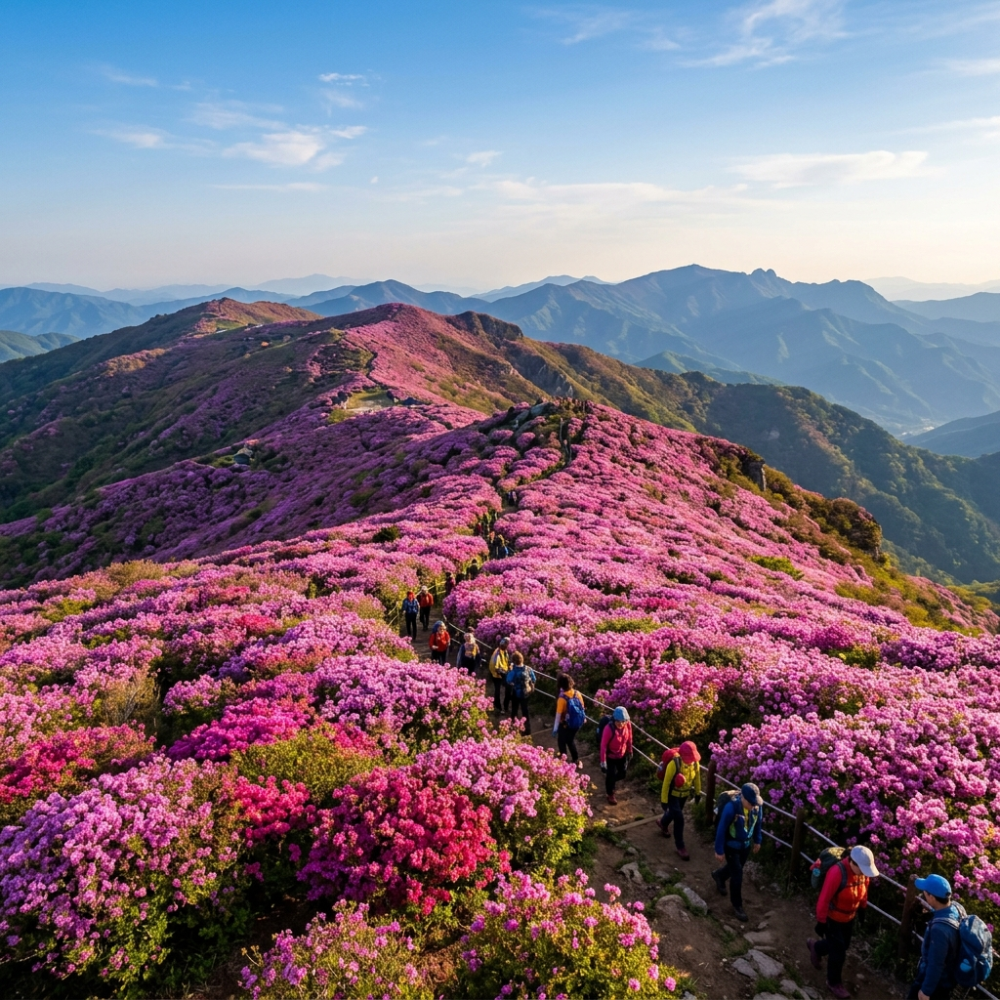
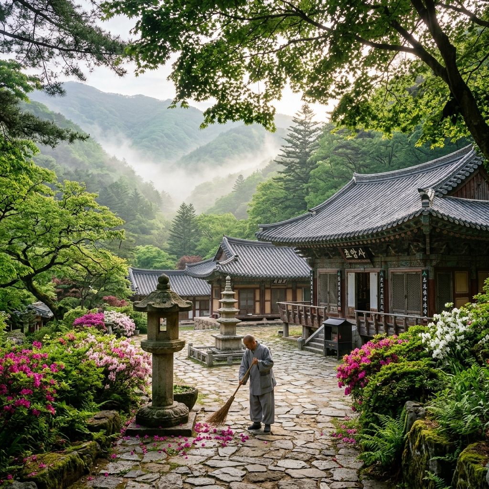
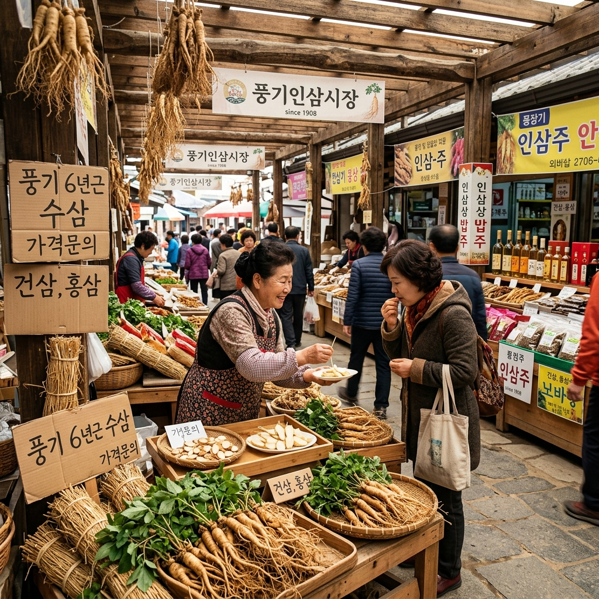

4월 벚꽃과 진달래가 지고 나면, 봄꽃 마니아들의 시선은 일제히 소백산으로 향합니다.
비로봉(1,439m)과 연화봉(1,383m) 사이 수 킬로미터 능선에 걸쳐 분홍빛 철쭉이 한꺼번에 피어나는 광경은 국내 봄꽃 여행의 마지막 하이라이트로 불립니다.
고산지대 특유의 낮은 기온 덕분에 저지대 철쭉이 이미 진 5월 하순에도 능선 위에서는 만개 상태를 유지하는 경우가 많습니다.
영주시 풍기읍 초암사 방면과 단양 천동계곡 방면, 두 루트 모두 능선에 오르면 하늘과 능선, 그리고 철쭉이 어우러지는 동일한 장관을 선사합니다.
개화 시기는 그해 봄 기온에 따라 1~2주 앞뒤로 유동적으로 움직입니다.
5월 23~24일 행사 기간에 실제로 만개할지는 출발 일주일 전부터 영주시청 관광 SNS를 통해 반드시 사전 확인이 필요합니다.
| 프로그램 | 장소 | 비고 |
|---|---|---|
| 소백산 트레킹 대회 | 초암사 ~ 비로봉 능선 | 사전 신청, 완주 스탬프 제공 |
| 죽죽제의 | 소백산 일원 | 전통 제례 재현, 자유 관람 |
| 죽령옛길 걷기 | 죽령 일대 | 3km 왕복, 약 1.5~2시간 |
| 버스킹·합창제 | 풍기인삼문화팝업공원 | 팝·포크·지역합창 라이브 |
| 농특산물 직거래 장터 | 풍기인삼문화팝업공원 | 풍기인삼·사과주 등 |
| 프로그램 | 장소 | 비고 |
|---|---|---|
| 숲속음악회 | 소백산 숲 특설무대 | 자연 음향 라이브 공연 |
| 버스킹·청소년댄스 | 풍기인삼문화팝업공원 | 트로트·발라드·지역청소년 |
| 키자니아 in 철쭉제 | 풍기인삼문화팝업공원 | 직업 체험: 과학수사대·동물병원·치과·건축사무소 |
| 덴동어미 화전가 | 공원 무대 | 경북 전통 민속 공연 재현 |

영주 소백산 철쭉제가 다른 축제와 구분되는 결정적 차별점이 바로 죽령옛길 걷기입니다.
죽령은 경북 영주시 풍기읍과 충북 단양군 사이의 고개로, 기록에 따르면 신라 아달라왕 5년(서기 158년) 죽죽이 처음 길을 낸 것이 시작입니다.
삼국 시대에는 군사 요충지, 고려·조선 시대에는 과거를 보러 한양으로 가는 선비들의 통로였던 역사의 길입니다.
지금은 포장도로 옆에 원형에 가까운 흙길이 복원되어 누구나 걸을 수 있습니다.
왕복 약 3km, 소요 시간은 1시간 30분~2시간으로 일반 체력이라면 어렵지 않게 완주할 수 있습니다.
죽령 정상(해발 689m)에서는 경북·충북의 도계를 새긴 경계석이 독특한 인증 사진 포인트가 됩니다.
길 양옆의 낡은 성황당과 거대한 고목들이 조용한 산길의 정취를 더하며, 철쭉 능선과는 사뭇 다른 고요한 감동을 선사합니다.
영주 방면에서 소백산 철쭉 능선에 오르려면 초암사 방면 등산로를 이용합니다.
초암사 주차장을 출발점으로 삼아 능선부까지 편도 약 5~6km, 2시간 30분~3시간이 걸립니다.
왕복 5~6시간 코스이므로 일몰 전 하산을 마치려면 이른 아침 출발이 매우 중요합니다.
축제 당일에는 탐방객이 집중되므로 오전 7~8시 이전 입산을 강력 권장합니다.
능선 일대는 5월에도 바람이 강하고 기온이 낮아, 산 아래가 20°C여도 능선에서는 10~15°C까지 체감 온도가 떨어집니다.
방풍 재킷은 반드시 배낭에 챙겨야 합니다.
하산 후 초암사 경내를 짧게 둘러보면 신라 때 창건된 고찰의 고요한 분위기로 트레킹을 여운 있게 마무리할 수 있습니다.
| 구간 | 거리 | 소요 시간 | 특징 |
|---|---|---|---|
| 초암사 주차장 → 초암사 | 0.5km | 10분 | 완만, 포장도로 |
| 초암사 → 늦은맥이재 | 3.5km | 1시간 40분 | 급경사 구간 포함 |
| 늦은맥이재 → 연화봉 | 2km | 50분 | 철쭉 군락 핵심 구간 |
| 연화봉 → 비로봉 | 1.5km | 30분 | 능선 전망 최고 |
| 하산 (원점 회귀) | 동일 | 2시간 30분 | 무릎 보호대 권장 |

트레킹 후 에너지를 보충하고 쇼핑과 공연을 한꺼번에 즐길 수 있는 곳이 풍기인삼문화팝업공원입니다.
풍기읍은 국내 최고 품질의 인삼 산지로 이름 높습니다.
축제 기간 열리는 직거래 장터에서는 산지 가격으로 인삼과 사포닌 제품을 구입할 수 있어 선물 쇼핑에 제격입니다.
여행자들에게 가장 인기 있는 것은 잔뿌리 인삼과 인삼 막걸리로, 가격 대비 만족도가 높습니다.
공원 안 푸드 존에서는 인삼삼계탕, 인삼 만두, 인삼 막걸리 등 지역 특색 음식을 현장에서 맛볼 수 있습니다.
가족 방문객이라면 키자니아 in 철쭉제를 놓치지 마세요.
과학수사대·동물병원·치과·건축사무소 등 직업 체험이 무료로 운영되지만, 인원 제한이 있어 오전 중 현장 선착순 접수를 서두르는 것이 좋습니다.
영주 풍기읍은 수도권에서 기차로 접근하기 편리한 여행지입니다.
서울 청량리역에서 무궁화호를 타면 풍기역까지 약 2시간 20분이 걸립니다.
풍기역에서 초암사까지는 택시로 15~20분 거리입니다.
주말 축제 기간에는 풍기역과 행사장 사이에 무료 셔틀버스가 운행되는 경우가 많으니, 출발 전 054-630-8703으로 운행 여부를 확인하는 것이 좋습니다.
6~7시간의 소백산 트레킹을 마치고 나면 든든한 식사가 절실해집니다.
풍기읍에서 가장 먼저 떠올리게 되는 음식은 인삼삼계탕입니다.
인삼 생산지답게 닭 안에 통인삼을 통째로 넣고 고아낸 삼계탕은 그 어느 도시에서도 맛볼 수 없는 풍기 고유의 음식입니다.
1인분 기준 14,000~18,000원으로, 트레킹 후 체력 회복에 제격입니다.
경북 한우 전골도 현지인들이 적극 추천하는 메뉴입니다.
소백산 청정 환경에서 자란 경북 한우를 풍기식 전골로 즐기는 것이 이 지역 미식의 정수입니다.
풍기인삼 막걸리는 편의점이나 시장에서 한 병 3,000~4,000원에 구입할 수 있으며, 고소하고 은은한 인삼 향이 피로 회복에 도움을 줍니다.
서울에서 출발해 당일치기로 소백산 철쭉 트레킹을 마치고 귀환하려면 오전 6시 이전 출발이 사실상 필수입니다.
체력적으로는 가능하지만 상당히 빡빡한 일정이 됩니다.
충분히 여유 있는 여행을 원한다면 1박 2일 코스를 추천합니다.
첫날 저녁 풍기나 영주 시내에서 숙박한 뒤, 이튿날 이른 아침 입산하면 능선을 가장 여유롭게 즐길 수 있습니다.
영주 시내에는 비즈니스 호텔급 숙소가 여럿 있으며, 풍기읍에도 모텔과 펜션이 있습니다.
철쭉제 주말에는 숙박 수요가 집중되므로 최소 2주 전 예약을 권장합니다.
네이버 예약 또는 여기어때 앱에서 '영주 모텔', '풍기 펜션'으로 검색하면 다양한 선택지를 확인할 수 있습니다.

소백산 철쭉은 기상 조건에 따라 개화 시기가 상당히 유동적입니다.
5월 23~24일 행사 기간이라고 해서 반드시 만개가 보장되는 것은 아닙니다.
출발 일주일 전부터 영주시청 공식 SNS와 소백산 철쭉제 공식 채널(@yctf.or.kr)을 팔로우하며 실시간 개화 현황을 확인하는 것이 가장 정확합니다.
특히 5월 상순 평균 기온이 평년보다 2°C 이상 낮으면 개화가 1~2주 지연될 수 있습니다.
만약 행사 기간에 개화가 늦어진다면, 5월 말이나 6월 초에 따로 방문하는 편이 더 나은 선택이 될 수도 있습니다.
철쭉이 만개하지 않더라도 죽령옛길 트레킹과 풍기인삼 체험만으로도 충분히 매력적인 여행이 됩니다.
개화 시기를 유연하게 조정할 의향이 있다면, 이 여행지는 어떤 타이밍에도 실망시키지 않을 것입니다.